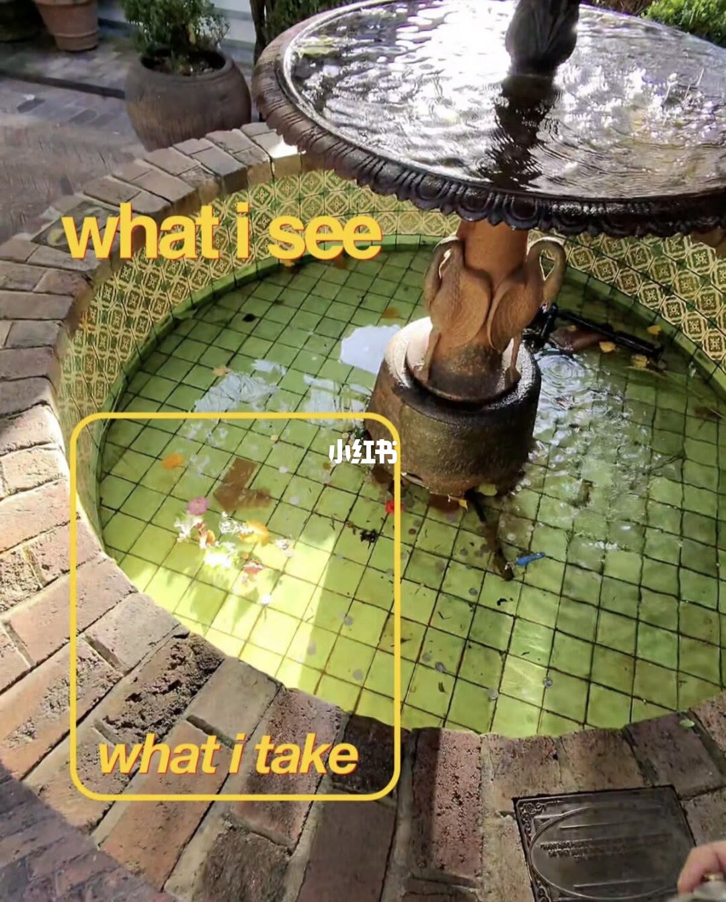
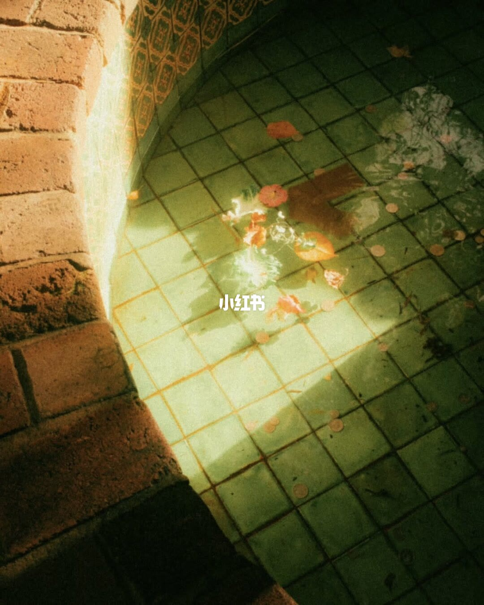
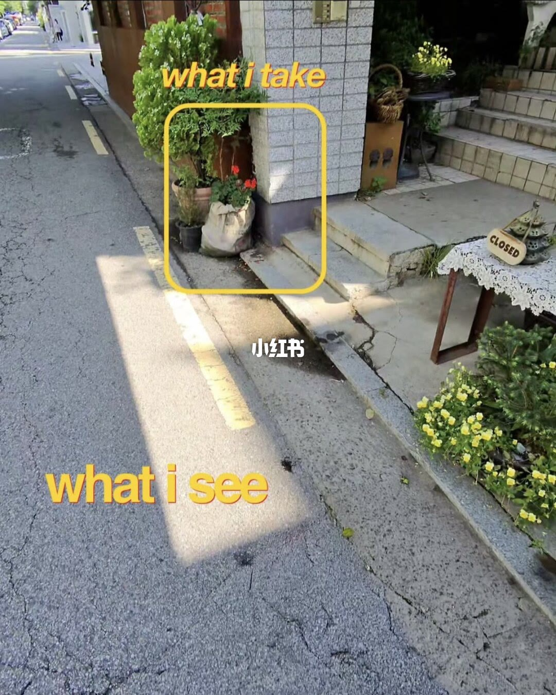
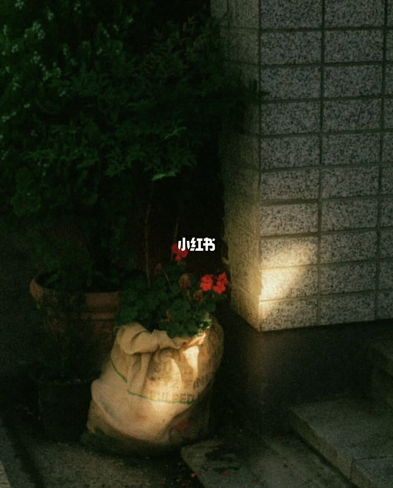
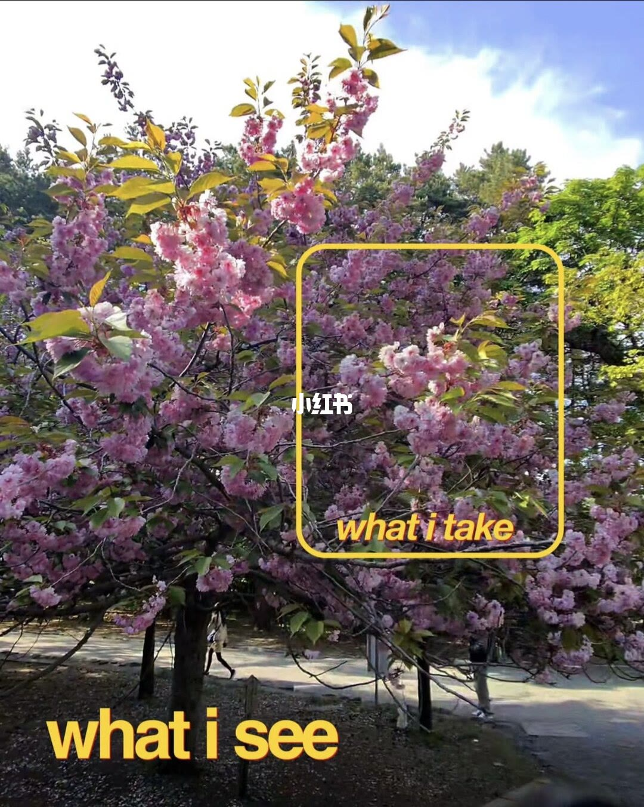
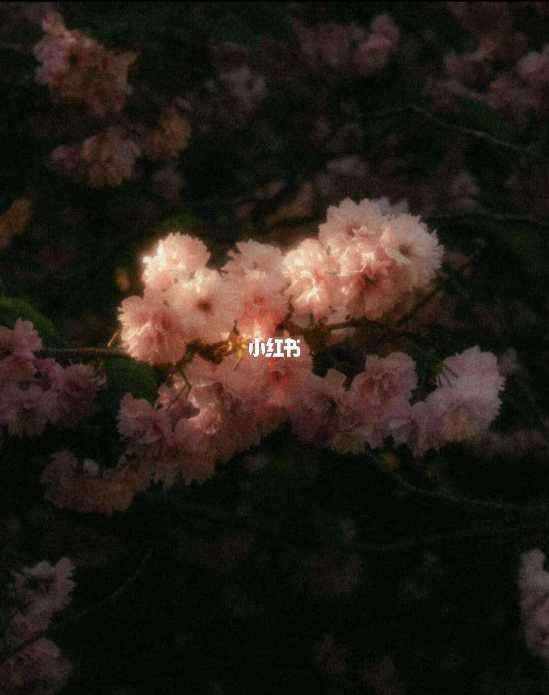
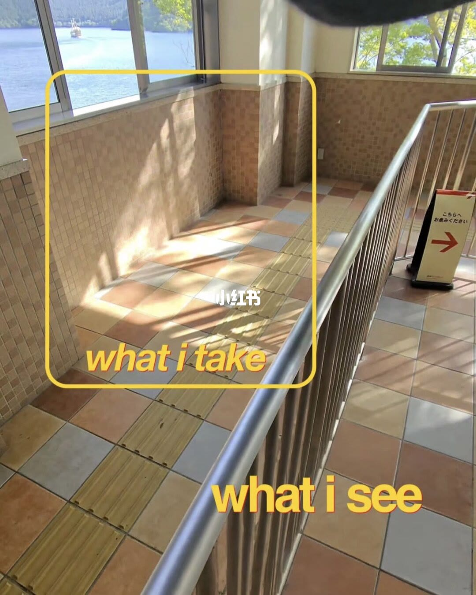
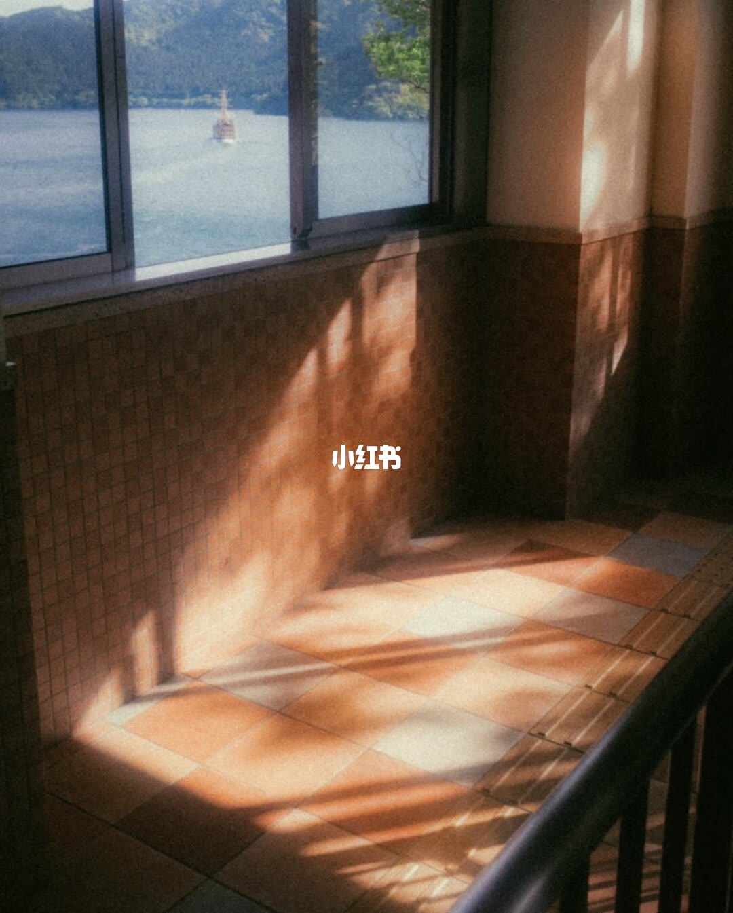

内容要点
方法可复用：先广角确认「看见了什么」，再框出唯一主体；曝光偏向侧光与暗部，让背景退场；调色用暖调与颗粒统一情绪，而不是把整景提亮。
总结
构图不是把看到的全装进画面，而是决定「只留下哪一块光」；调色服务于这个决定，把其余压暗。
图文实录
喷泉池角：整景 vs 光束局部
对照逻辑：看见的是场景，拍到的是光斑与局部秩序 → 裁切与调色把「杂乱池面」收成一条光的故事线
第 1 页用黄框标出「我拍到的」区域；第 2 页是裁切并调色后的成片——光比、颗粒与暗部共同完成从「看见」到「拍到」的转换。

[1/8] 广角看见整座喷泉与池面；黄框只取砖沿、绿瓦与一束阳光下的花瓣
Wide view of the whole fountain; the yellow frame keeps only the brick edge, green tiles, and sunlit petals

[2/8] 成片：对角线砖沿 + 光束切水 + 花瓣/硬币点缀，胶片颗粒与暖调压暗其余
Final frame: diagonal brick edge, a light beam on water, petals and coins as accents, film grain and warm grade
街角门口：空街 vs 红花麻袋
对照逻辑：行人与空街是干扰，角落静物才是构图核 → 曝光与暗部比「拍全门口」更能出情绪
第 3 页用黄框标出「我拍到的」区域；第 4 页是裁切并调色后的成片——光比、颗粒与暗部共同完成从「看见」到「拍到」的转换。

[3/8] 整条街道与门店入口一览无余；黄框只取柱角红花麻袋与绿植
Full street and shop entrance; the yellow frame isolates the red-flower sack and plants at the pillar corner

[4/8] 成片：低照度侧光勾勒麻袋质感，红花跳色，暗部吞掉杂乱背景
Final: sidelight sculpts the burlap, red blooms pop, shadows swallow the busy background
樱花树：满树 vs 一簇高光
对照逻辑：满树等于没重点，一团花才有主体 → 用暗部做底板，让花成为唯一光源叙事
第 5 页用黄框标出「我拍到的」区域；第 6 页是裁切并调色后的成片——光比、颗粒与暗部共同完成从「看见」到「拍到」的转换。

[5/8] 整树与步道行人尽入镜；黄框只截取被光打亮的一团重瓣花
Whole tree and path walkers; the yellow frame crops one sunlit cluster of double blossoms

[6/8] 成片：深影衬托粉樱，高光晕染花瓣，背景几乎消隐
Final: deep shadow behind pink sakura, soft highlight bloom on petals, background nearly gone
廊道窗光：全景 vs 地面几何影
对照逻辑：地中海窗光的「形状」比窗外风景更可拍 → 光影几何是主，窗外风景降为陪衬
第 7 页用黄框标出「我拍到的」区域；第 8 页是裁切并调色后的成片——光比、颗粒与暗部共同完成从「看见」到「拍到」的转换。

[7/8] 窗景、栏杆、棋盘地砖全景；黄框只取斜切地面的窗框投影
Full hallway with window view and railing; the yellow frame keeps only the geometric window shadows on the floor

[8/8] 成片：金色斜影铺地，窗外湖山作辅，颗粒与暖调统一情绪
Final: golden slanted shadows on tiles, lake and hills as secondary, grain and warm grade unify the mood